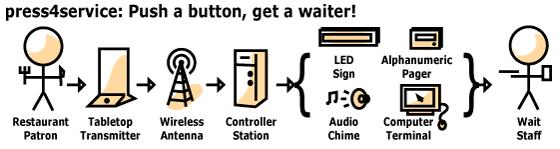

Welcome

Do you own or manage a restaurant or bar? Want to make your customers happier and earn more money? Then you might be interested in press4service. It's a system that lets your customers push a button to instantly request service from your wait staff, anywhere at your facility. Why is this a good thing?
- Boosts customer satisfaction: Customers don't have to sit around, hoping that a waiter comes around. The press4service system gives customers the power to order items and request bills when they're ready. Happier customers will buy more and return with their friends.
- Increases table turnover rate: During the lunch rush, you want to serve customers quickly and get them out the door so you can serve the next ones. The press4service system cuts wait times so you can serve more customers in the same amount of time.
- Gets more orders: Side-dishes, additional drinks and deserts are big money-makers, but patrons in a rush don't order as many of these extras as they could because they're worried about getting back to work. The press4service system reduces the time crunch so that patrons can order everything they want.
- More profit: When you serve more orders and customers with better efficiency during peak hours, you earn more.
- Bigger tips for your wait staff: Happy customers give bigger tips and will treat your staff better.
The press4service system is not a substitute for an adequate and well-trained wait staff. This technology isn't for cutting costs -- it's about providing excellent service to make the bar and dining experience more enjoyable for everyone.